登录验收演示账号
目的让新用户从账号登录开始进入系统，证明手册覆盖完整入口路径。
操作打开本地登录页，输入 local_owner@strategy-ai.local 和 owner123。
结果系统完成鉴权并进入仪表盘。
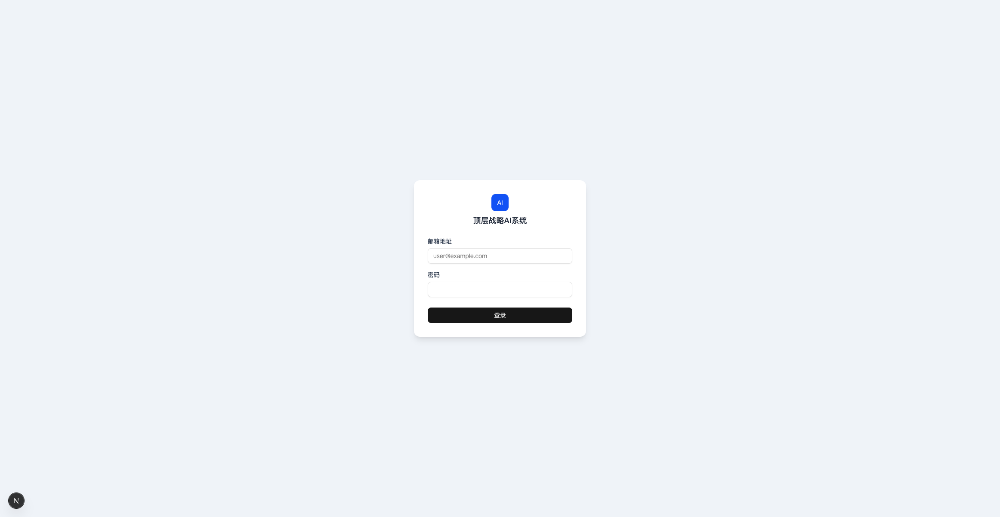
这一步证明：系统从登录账号开始，手册可指导新用户进入系统。
本手册用于说明顶层战略 Agent 的完整使用路径：从登录账号，到完成从 0 到 1 构建，再到日常动态更新和专家评审。

这一步证明：系统从登录账号开始，手册可指导新用户进入系统。
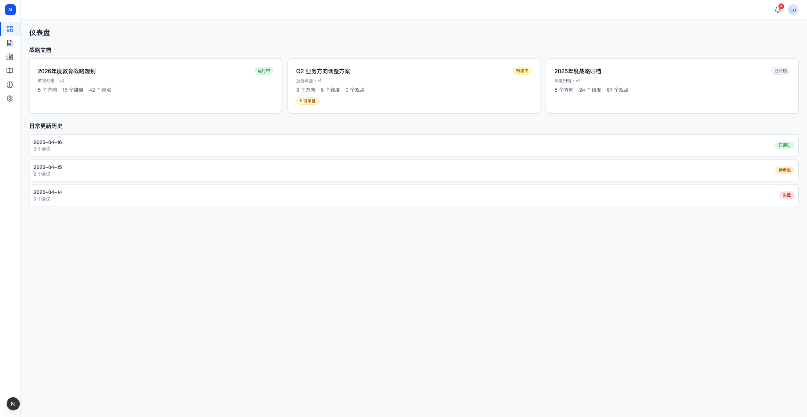
这一步证明：用户进入后先看战略文档、构建进度和日更状态。
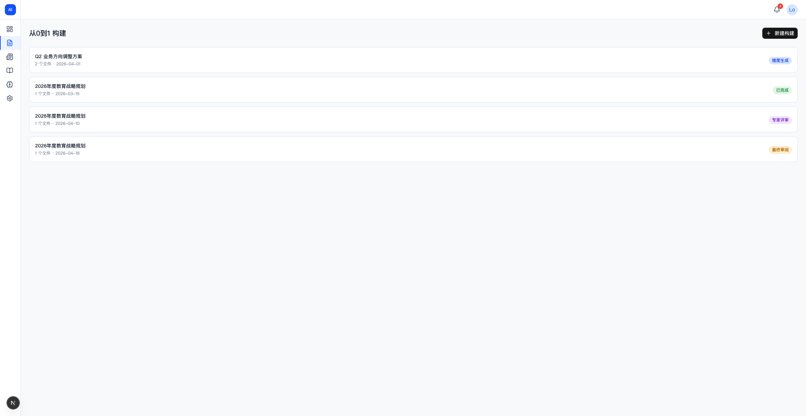
这一步证明：从 0 到 1 构建入口存在，可选择构建任务。
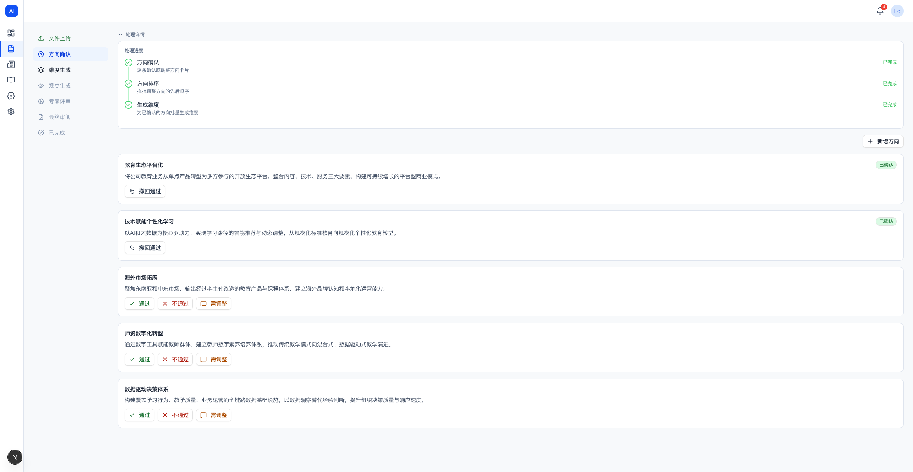
这一步证明：AI 拆解战略方向后，用户进入逐层确认流程。
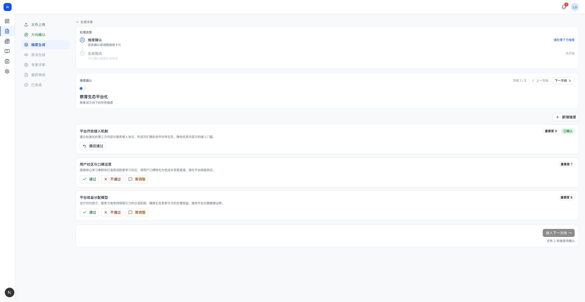
这一步证明：用户可确认战略维度，AI 不直接替人拍板。
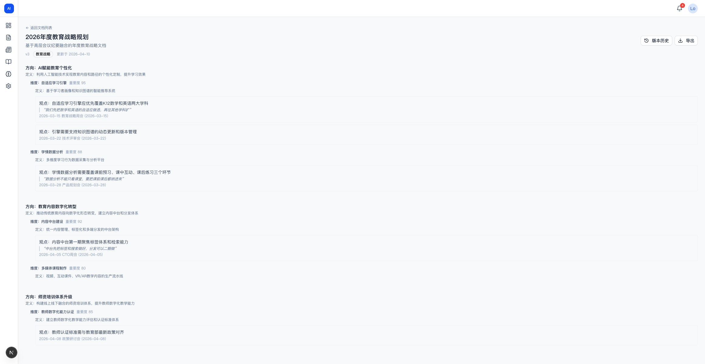
这一步证明：构建完成后，观点进入正式战略文档，并保留来源引用以支持追溯。
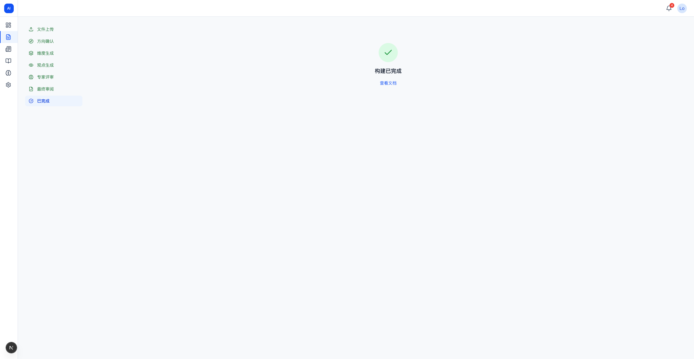
这一步证明：从 0 到 1 构建闭环可到达完成态。
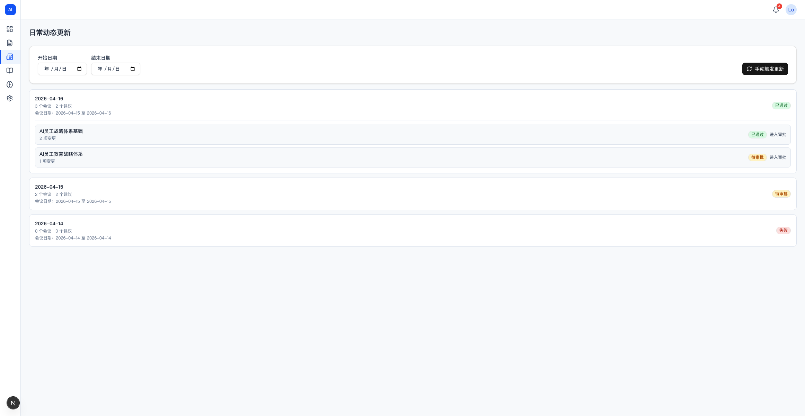
这一步证明：日常动态更新入口和任务列表存在。
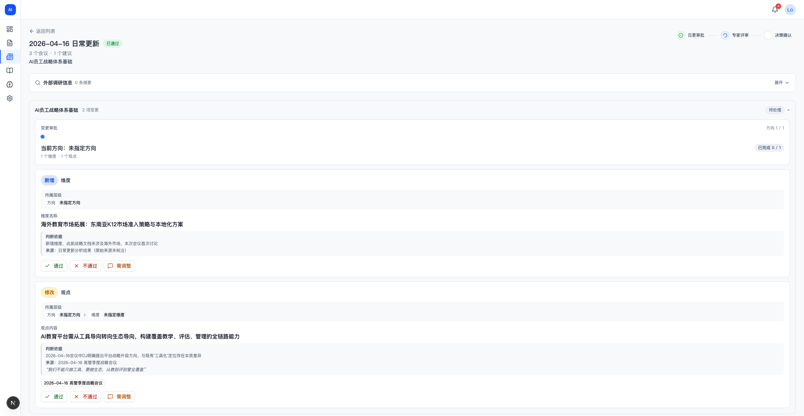
这一步证明：系统生成变更建议，用户可采纳、拒绝或调整。
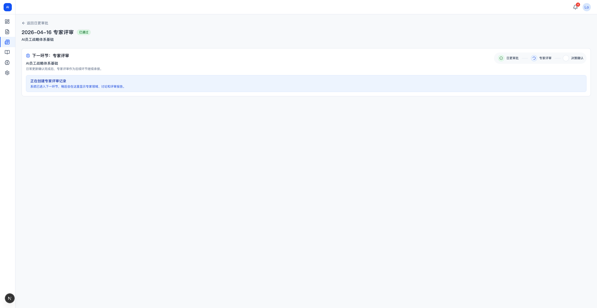
这一步证明：日更变更进入专家复核。
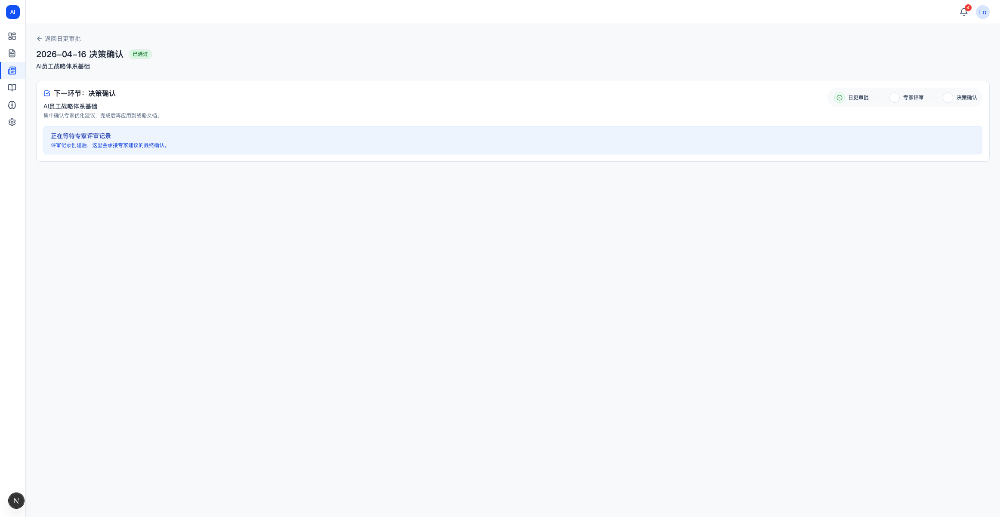
这一步证明：日更最终由人做决策并形成闭环。
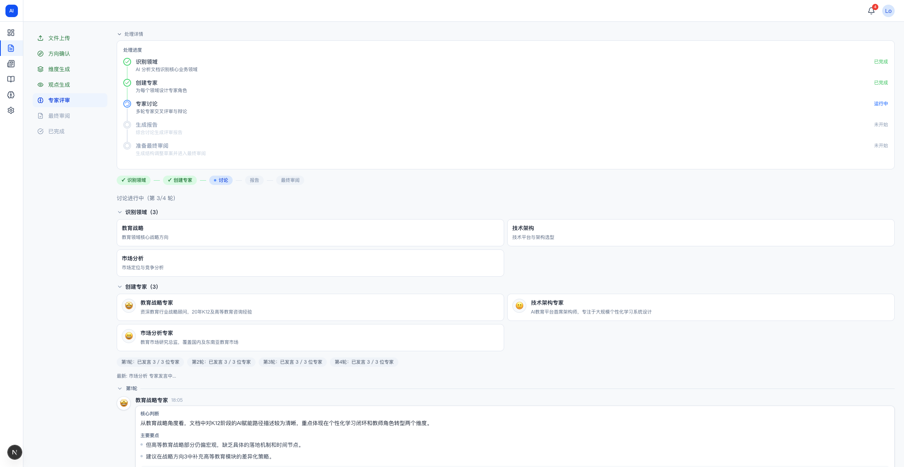
这一步证明：战略文档进入专家评审，人保留最终判断。
这一步证明：仪表盘和导航结构提供系统地图。